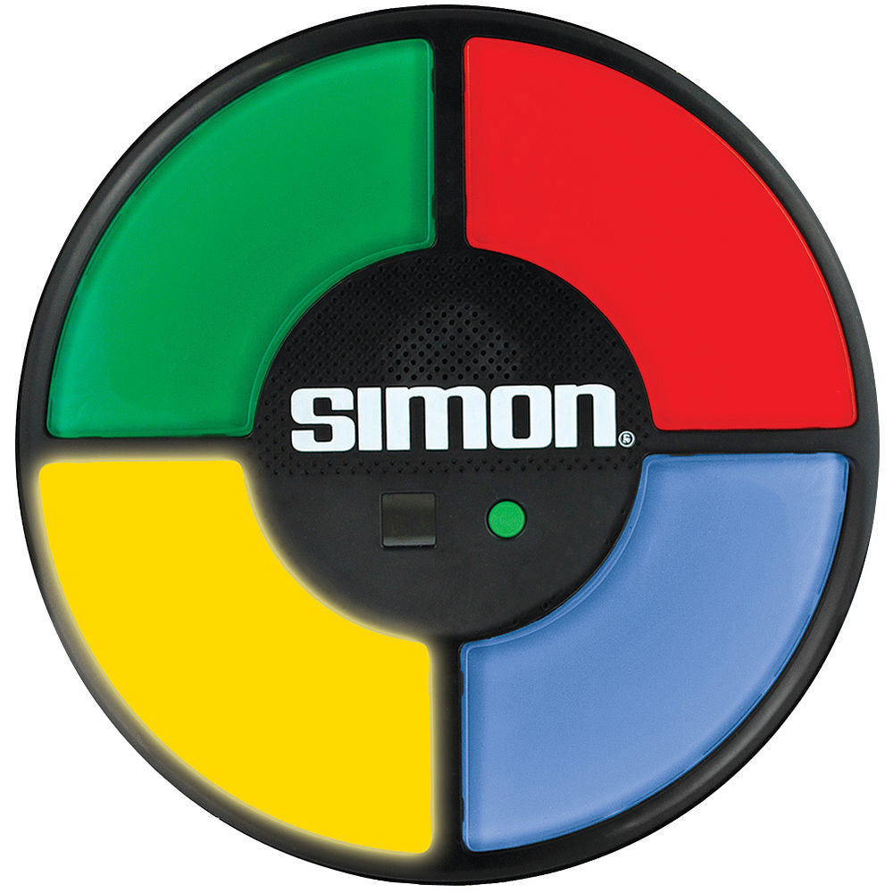

Le jeu, électronique, éclaire une des quatre couleurs et produit un son toujours associé à cette couleur. Le joueur doit alors appuyer sur la touche de la couleur qui vient de s'allumer dans un délai assez court. Le jeu répète la même couleur et le même son, puis ajoute au hasard une nouvelle couleur. Le joueur doit reproduire cette nouvelle séquence. Chaque fois que le joueur reproduit correctement la séquence, le jeu ajoute une nouvelle couleur. But du jeu : Le but du jeu étant de reproduire la plus longue des suites
Perdu !

Trouvés :